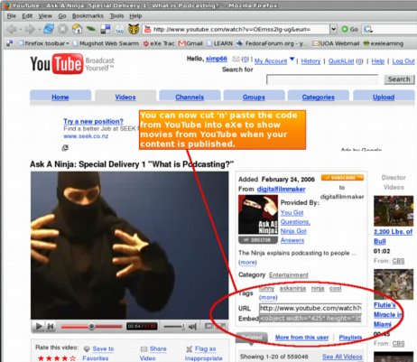
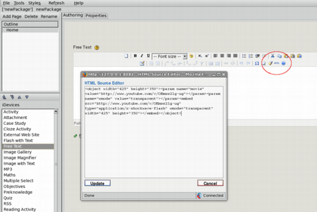

Online manual/Tips
Contents |
Inserting YouTube video into eXe
You can now include the HTML code to insert YouTube (or Google) Videos into eXe content. This will display videos from either of these sites inside your content when it is published online.
To insert the code, first locate the video you wish to include and select the embed HTML from the YouTube page.

Then, using any iDevice in eXe select the HTML button from the editing toolbar.

and paste the code you have copied from YouTube into the HTML editing window. Click on the Update button to insert the YouTube code into eXe.
The code that you have inserted does not display in the editing environment but your video will appear in preview mode if you are authoring while online. If you are offline it will only display when exported and put online or inside your favourite LMS. You can still enter text and other formatting around the video, it's just a little tricky to figure out where the video is in relation to your entered text. Looking at the HTML view is an easy way to do some simple formatting to get your video to appear where you would like.
The Refresh Option
If like me you often have that urge to follow a web link within your content you will discover that clicking on the link should open it in your preferred browser, not in eXe. If something does open in your eXe authoring pane, you can restore your original work by using the Refresh Display option in the Tools menu.
Close an instance of eXe completely
To properly close an instance of eXe you must use the Quit option under the File menu. This is a particular problem with Windows users who are used to using the close button at the top right hand corner of an application to close it.
If you somehow manage to close just the eXe display window (Firefox), the eXe server will continue to run in the background. On Windows if you have closed the eXe display with the red close button, use the following steps to stop the process.
- Press Ctrl>Alt>Delete and open Task Manager
- Select the Processes tab
- Select exe.exe from the list of processes currently running
- Click the End Process button
Utilizing the Homepage
The very top level of the eXe hierarchy represents your content homepage. This is the only page that can be accessed at this level. This tip covers some options for using this page particularly where your content does not require the homepage as part of its hierarchy, in other words all the pages of your content are represented on the same structural level.
Welcome and Instructions
Use the homepage to Welcome learners to the content.
- Provide some background about what they can expect from the resource, why it was produced, how it was produced and perhaps who produced it.
- Describe the overall learning objective for the content
- Provide references to any academic publications that may have been used to compile the content.
- Provide learners with instructions on how to work through or navigate the content